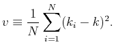
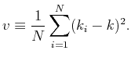
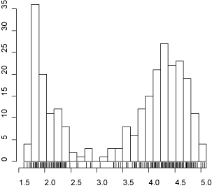

Home Last Update 2006-11-21 19:21 Francais
Histogram Bin Size Selection
A Method for Selecting the Bin Size of a Histogram
(i) Divide the observed data range into  and  and  (iv) Repeat i through iii while changing the bin size |
An Optimized Histogram
 A histogram with bin width optimized by the above method. |
Web Application for Bin Size Selection (Ver. 0.10 beta)
This web application calculates the optimal bin size of the data you post. *The data is processed on your own computer (the data is not transferred to our or any other server). 1. Post Data Please `Copy&Paste' your data in a text area below. *Java and Javascript programs are tested for IE6 and Firefox 1.5 on Windows. Firefox 1.5 on Linux. Firefox 1.5 and Safari on MacOS. The program does not work in Opera. 06/11/08 Ver. 0.10 Improved datasheet output. Web Application for Bin Size Selection © 2006 Hideaki Shimazaki |
FAQ
| Q. It seems like that your
theory
assumes a time histogram.
Can I apply the proposed method to a histogram for a probability distribution?
A. Yes. Q. I obtained a very small bin width, which is likely to be erroneous. Why? A. You probably searched smaller bin widths than the sampling resolution of your data. Please begin the search from the bin width at least twice as large as your sampling resolution. In addition, please check if your data contains duplicated samples. A small bin width will be selected for such highly correlated samples. Q. I have used the Scott's method Optimal Bin Size= 3.49*s*n^(-1/3) ,
and obtained bin size that differs from the result obtained by the present method.
A. They should be different. Three assumptions were made to obtain the Scott's result. First, the Scott's result is asymptotically true (i.e. it is true for large sample size n). Second, the scaling exponent -1/3 is true if the density is a smooth function. Third, the coefficient 3.49 was obtained, assuming the gaussian density function as a reference. The present method does not require these assumptions. Q. I want to make a 2-dimensional histogram. Can I use this method? A. Yes. The 'bin size' of a 2-d histogram is the area of a segmented square cell. The mean and the variance are simply computed from the event counts in all the bins of the 2-dimensional histogram. Q. Can I use unbiased variance in the formula of bin size selection? A. No. Please use the (biased) variance displayed in the method. Please note that a built-in function for variance calculation in a software may returns unbiased variance in default.
The FAQ includes my (HS) opinion. They are not opinions neither by my collaborators or the institution I belong to. |
Reference
Shimazaki H. and Shinomoto S., A method for selecting the bin size of a time histogram Neural Computation [pdf] A short summary: Shimazaki H. and Shinomoto S., A recipe for optimizing a time-histogram Neural Information Processing Systems Vol. 19, 2007 [pdf] |
What is an Optimal Bin Size?
When you make a histogram, you need to choose a bin size. How large (or small) the bin size should be?
There is an optimal bin size that remedies these two opposite problems. The Java Applet below demonstrates the problem of the bin size selection. In the applet, data is shown in the upper box and its histogram in the bottom box. The data is an example from Neuroscience: the data is a timing of neuronal firing (spikes), and they are obtained by repeating trials. Twenty sequences (trials) are drawn in the data box. However, the data can be anything (weight, height, or test score etc.), and can be one sequence. The histogram is shown in the bottom box by red color. The blue line is the distribution (or rate) that produced data samples in the box above. Our aim is to choose a histogram that best represents this blue line. As a first step, change the bin size of a histogram in the applet by using the scroll bar at the bottom. With too small a bin size, you get a jagged histogram. With too large a bin size, you obtain a flat histogram. Now bring the scroll bar left to make the bin size thin, and push `redraw' button several times. The `redraw' button regenerates sample points based on the blue density distribution. Please confirm that the shape of the histogram drastically changes. If you are told to tell which of the two hills of the distribution is taller, can you tell? Although the right hill is taller than the left (blue line), the maximum height of a histogram appears at left side quite often. As a second step, bring your scroll bar right to make the bin size broad, and push `redraw' several times. Please confirm that the shape of the histogram does not change very much. In addition, you may notice the right hand side of the hills is higher than the left hand side most of the time. However, can you tell where is the highest point of the hill? The resolution of the histogram is not good enough. When you make a histogram, you need to choose a bin size that compromises the conflict between the sample error and the resolution. Now please check the `error check box' on. Yellow area appears, which indicates an error between the histogram and the underlying distribution. You could turn off the histogram check box. Please examine where the total error becomes the smallest by your eyes. You would find that the error becomes the smallest when you bring the scroll bar handle about one fourth of the total length from the left. Please push the `redraw' button several times to check the statistical fluctuation of errors. The optimal bin size of a histogram is the bin size that produces the smallest total errors (yellow area) on average of many realizations of sampled data (i.e. average over many pushes of `redraw' button). At this moment, you might say, "Okay, I now understand what an optimal bin size is. But, how can we know it? After all, we do not know the blue underlying distribution. So we can not know the errors. We can never know the optimal bin size from data." This statement is not true. Indeed, the errors can be estimated from the data. The above method computes the estimated errors for several candidate bin sizes, and choose the bin size that produces the smallest `estimated' error. For the details of the method, please refer to Shimazaki and Shinomoto in Neural Computation. |
Sample Matlab Program
%%%%%%%%%%%%%%%%%%%%%%%%%%%%%%%%%%%%%%%%%%%%%%%%%%%%%%%%%%%%%%%%%%
% 2006 Author Hideaki Shimazaki
% Department of Physics, Kyoto University
% shimazaki at ton.scphys.kyoto-u.ac.jp
% Please feel free to use/modify/distribute this program.
%
% Data: the duration for eruptions of
% the Old Faithful geyser in Yellowstone National Park (in minutes)
clear all;
x = [4.37 3.87 4.00 4.03 3.50 4.08 2.25 4.70 1.73 4.93 1.73 4.62 ...
3.43 4.25 1.68 3.92 3.68 3.10 4.03 1.77 4.08 1.75 3.20 1.85 ...
4.62 1.97 4.50 3.92 4.35 2.33 3.83 1.88 4.60 1.80 4.73 1.77 ...
4.57 1.85 3.52 4.00 3.70 3.72 4.25 3.58 3.80 3.77 3.75 2.50 ...
4.50 4.10 3.70 3.80 3.43 4.00 2.27 4.40 4.05 4.25 3.33 2.00 ...
4.33 2.93 4.58 1.90 3.58 3.73 3.73 1.82 4.63 3.50 4.00 3.67 ...
1.67 4.60 1.67 4.00 1.80 4.42 1.90 4.63 2.93 3.50 1.97 4.28 ...
1.83 4.13 1.83 4.65 4.20 3.93 4.33 1.83 4.53 2.03 4.18 4.43 ...
4.07 4.13 3.95 4.10 2.27 4.58 1.90 4.50 1.95 4.83 4.12];
x_min = min(x);
x_max = max(x);
N_MIN = 4; % Minimum number of bins (integer)
% N_MIN must be more than 1 (N_MIN > 1).
N_MAX = 50; % Maximum number of bins (integer)
N = N_MIN:N_MAX; % # of Bins
D = (x_max - x_min) ./ N; % Bin Size Vector
%%%%%%%%%%%%%%%%%%%%%%%%%%%%%%%%%%%%%%%%%%%%%%%%%%%%%%%%%%%%%%%%%%
% Computation of the Cost Function
for i = 1: length(N)
edges = linspace(x_min,x_max,N(i)); % Bin edges
ki = histc(x,edges); % Count # of events in bins
ki = ki(1:end-1);
k = mean(ki); % Mean of event count
v = sum( (ki-k).^2 )/N(i); % Variance of event count
C(i) = ( 2*k - v ) / D(i)^2; % The Cost Function
end
%%%%%%%%%%%%%%%%%%%%%%%%%%%%%%%%%%%%%%%%%%%%%%%%%%%%%%%%%%%%%%%%%%
% Optimal Bin Size Selectioin
[Cmin idx] = min(C);
optD = D(idx); % *Optimal bin size
edges = linspace(x_min,x_max,N(idx)); % Optimal segmentation
%%%%%%%%%%%%%%%%%%%%%%%%%%%%%%%%%%%%%%%%%%%%%%%%%%%%%%%%%%%%%%%%%%
% Display an Optimal Histogram and the Cost Function
subplot(1,2,1); hist(x,edges); axis square;
subplot(1,2,2); plot(D,C,'k.',optD,Cmin,'r*'); axis square;
|
Sample R Program
Copy and Paste the program, then run
sshist(faithful[,1])
#%%%%%%%%%%%%%%%%%%%%%%%%%%%%%%%%%%%%%%%%%%%%%%%%%%%%%%%%%%%%%%%%%
# 2006 Author Hideaki Shimazaki
# Department of Physics, Kyoto University
# shimazaki at ton.scphys.kyoto-u.ac.jp
# Please feel free to use/modify/distribute this program.
sshist <- function(x){
N <- 2: 100
C <- numeric(length(N))
D <- C
for (i in 1:length(N)) {
D[i] <- diff(range(x))/N[i]
edges = seq(min(x),max(x),length=N[i])
hp <- hist(x, breaks = edges, plot=FALSE )
ki <- hp$counts
k <- mean(ki)
v <- sum((ki-k)^2)/N[i]
C[i] <- (2*k-v)/D[i]^2 #Cost Function
}
idx <- which.min(C)
optD <- D[idx]
edges <- seq(min(x),max(x),length=N[idx])
h = hist(x, breaks = edges )
rug(x)
return(h)
}
|
© 2006 Hideaki Shimazaki All rights reserved.